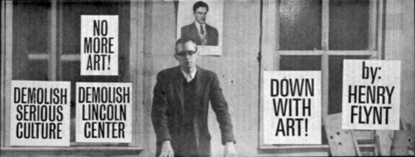

Quotes from:
Henry Flynt © 1994
Concept art was meant to replace all of mathematics with an
endeavor which involved a Rorschach-blot semantics; and which
did not claim to be cognitive, at least not in the inherited sense.
Mathematics had already been disconnected from claims of realism;
and I was extending that disavowal to a disconnection from claims
of a priori truth. Concept art's value consisted in beauty, a
beauty which was non-sentimental. Later I would say that its value
consisted in "the invention of new mental abilities." Popularity
had nothing to do with whether this avenue was worth taking. With
that background, it was easy for people to object that concept
art had nothing to do with art. At the end of the original concept
art essay, I offered that thought myself. My observation was quoted
by the reviewer of An Anthology in the Times Literary Supplement
of August 6, 1964.[1] Admittedly, concept art does not belong
to a traditional artistic branch or medium (e.g. painting), and
it is not pictorially sentimental. On the other hand, there is
a very strong tradition in mathematics which claims artistic value
for mathematics (in effect). What is more, there was a period
in which "serious music" became intellectually pretentious and
nonsentimental--and the serious music establishment backed this
development.
Concept art was meant to replace all of mathematics with an
endeavor which involved a Rorschach-blot semantics; and which
did not claim to be cognitive, at least not in the inherited sense.
Mathematics had already been disconnected from claims of realism;
and I was extending that disavowal to a disconnection from claims
of a priori truth. Concept art's value consisted in beauty, a
beauty which was non-sentimental. Later I would say that its value
consisted in "the invention of new mental abilities." Popularity
had nothing to do with whether this avenue was worth taking.
Tristan Tzara's recipe for composing a dadaist poem, written
before 1920.
(In: The Dada Painters and Poets, ed. Robert Motherwell.)
To make a dadaist poem
Take a newspaper.
Take a pair of scissors.
Choose an article as long as you are planning to make your poem.
Cut out the article.
Then cut out each of the words that make up this article and
put them in a bag.
Shake it gently.
Then take out the scraps one after the other in the order in
which they left the bag.
Copy conscientiously.
Dutch mathematician L.E.J. Brouwer in "Consciousness, Philosophy,
and Mathematics": "... the fullest constructional beauty
is the introspective beauty of mathematics, where instead of elements
of playful causal acting, the basic intuition of mathematics is
left to free unfolding. This unfolding is not bound to the exterior
world, and thereby to finiteness and responsibility; consequently
its introspective harmonies can attain any degree of richness
and clearness."
I saw an analogy between the syntax which metamathematics arrived
at, and the computational character, or derivational process character,
of much new music. It was also evident that Young's word pieces
concerned the metasyntax of music. [Not using the rules that define
music, but twisting the rules.] The original concept art was a
genre which used visual displays or process objects or text. It
was a genre of syntax, or of derivational process. The notion
that the sort of structure which subtended mathematics could have
aesthetic value was already established from ancient times for
mathematics; and it had been proclaimed for new music.
Concept art was meant to exhibit syntactical structures which
broke the framework of objectification. We find that for the first
time ever, I used a perceptual illusion as a logical notation.
I relativized the existence of a derivation to the perceptual
agility of the "knowing subject" or "viewer."
Mathematics had to have been projected onto its logical tree-structure
so that this tree-structure could then be manipulated in a blind
and cruel way –– à la Tzara and Cage. I have
cited Tzara's recipe for making a Dadaist poem. One may pass directly
from that to my exposition of "Haphazard System" in Blueprint
for a Higher Civilization, pp. 97-99.
My positioning of the concept-art venture in the Sixties took
some peculiar turns. As I said, as of 1961, I had no hesitation
about committing to art. Mathematical cognition had been replaced
by the search for uncanny structure, for ideas such that the possibility
of thinking them at all was amazing. The defensible value of the
enterprise, I thought, was aesthetic. Thus it was that all of
mathematics and all of art (mainly music) which had syntactical
pretensions were to be collapsed to a new genre of art. It was
right to call it art, not "science." Even so, at the end of the
concept art essay, I noted that concept art was entirely unsentimental,
and I forthrightly acknowledged that that cast doubt on the appropriateness
of classifying it as art. (. . .) Then, around 1966, there began
a long period in which I revisited concept art; and reworked it
discursively. (As investigations in formal language and in models
of inconsistent theories –– to put it in the jargon
which my work seeks to supplant.)